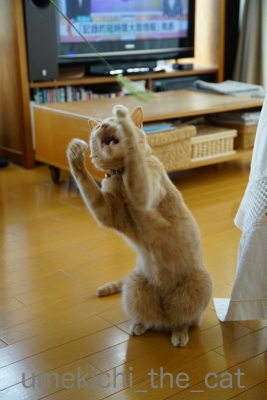
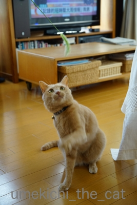
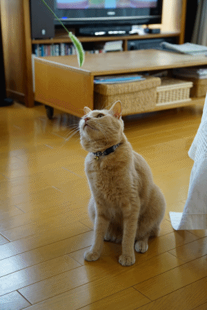
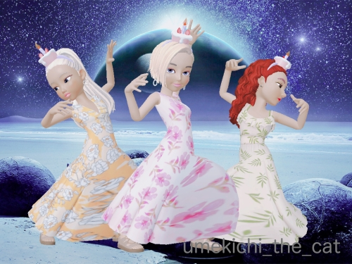
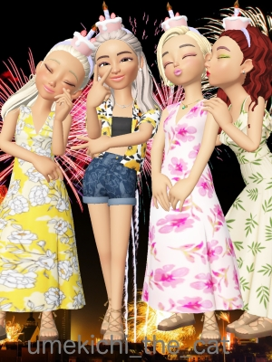
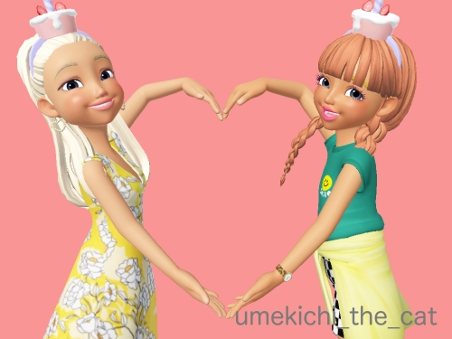
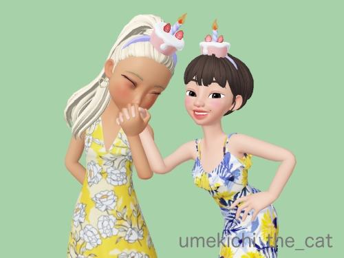

本物ねこじゃらし [梅吉]

梅吉さん、これはエノコログサと言ってですね、俗称猫じゃらしと呼ばれていて
お店で売ってる猫じゃらしはこれをモデルに・・・・・

と説明している側から食いつきます！

猫アターック！！

うふふ＾＾良いお顔ですねー0(≧▽≦)0
一連の出来事をgifでどうぞ。（無限ループです）

エノコログサ＝狗尾草（犬の尻尾の草）って書くの、知りませんでした(⌒-⌒;
梅吉の4回目のうちの子記念日へのたくさんのコメント本当にありがとうございましたm(_ _)m
同時に「コメレスごめんなさい」への温かいお言葉の数々もじっくり何度も読ませていただいて・・・
気持ちがふっと軽くなりました＾＾
ブログを通じての皆様とのおつきあい、楽しく長く続けて行けたら良いな
と改めて思った次第です(^_－)☆
感謝の気持ちを込めて「来年のうちの子記念日に」と考えていた
とびっきりの梅吉レア画像を！！

（おおさかねこネットのブログよりお借りしました）
きゃ〜〜〜〜〜〜〜っ0(≧▽≦)0
キトンブルーの梅吉です。
おたまじゃくしのしっぽみたいなのが笑えますwww
久しぶりのゼペットさん。
26日うちの子記念日祝いでバースデーケーキを頭に乗っけてたらお付き合いしてくれた方々が。
ありがとう！！

三美神！？marimoさんとリュカさんと。エフェクトかけてみたよーw
ちなみにちぃさんは左端です。イメチェンしたでしょ！？
女は変わるんですよ、ふふふふ(ΦωΦ)

ChatBleuさんも来てくれた＾＾

チャーさんとはハートマークで♡

くつしたにゃんさんとは
「来月でうちらまた一つおばちゃんになるんやなぁ。」とおばちゃんトーク！？
（誕生日が一緒なんです）
お付き合いしてくれた皆様、本当にありがとうございました＾＾

カフェオレ色の梅吉

梅吉 2023年8月10日 永眠


梅吉と出会った譲渡会

犬猫の理由なき殺処分ゼロ
妄想広告
UMEKICHI 光

爆発的に早い！
時々攻撃的！
Thanks to Mr.Boss365
爆発的に早い！
時々攻撃的！
Thanks to Mr.Boss365

本物猫じゃらしいいなー。梅吉さん目線が真剣で舌舐めずりしてますね。
チビ猫の梅吉さん「おかーさんはよ迎えに来てや」って叫んでるのかな。
by zombiekong (2019-07-29 00:45)
本物ねこじゃらしでじゃれる猫様を拝見するのって、実は意外と初めてかも。
狛尾草って書くのは知らなかった！犬の尻尾ってことは、実はにゃんこはわんこのしっぽにじゃれるのかなー^m^ あ、でも、にゃんこは自分の尻尾や仲間のしっぽにはじゃれますよね。
ちっちゃなちっちゃな梅吉さん、超かわいいーーーー！
ZEPETOさん、この頃自分では全然撮影してなくて。
ありがとうございます。
by ChatBleu (2019-07-29 06:15)
庭に生えてるんですけど、
食べちゃうので遊ばせません＾＾；
by ぽちの輔 (2019-07-29 07:37)
エノコログサは以前はそこら中で見た記憶がありますが、今は原っぱ自体がなくなってるので、久しぶりに見ました。
さすが梅吉さん、本物には本気で反応しますね(^_^)
by kou (2019-07-29 07:39)
おぉ～♪私が小さいころはよく見かけた
猫じゃらし！！
狛尾草って言うのですね♪
知りませんでした。
パピー梅吉さんの可愛さは
みんなを虜にする罪になります(#^.^#)
by きぃ (2019-07-29 08:06)
ちび梅ちゃん、可愛いすぎー！！！
ほんま、しっぽがオタマジャクシ(≧∀≦)
by よーちゃん (2019-07-29 08:36)
梅吉さん、本物の猫じゃらしに夢中ですね！
小さい頃は毛の色が少し違ったのですね。
by ma2ma2 (2019-07-29 09:23)
本物の猫じゃらしで遊べて良かったねーー^^
先代猫は、この本物の猫じゃらしでよく遊んでいたんだよ。
なのであおが小さい頃にも公園で抜いて持って帰ったら
遊んだあと、口の中が荒れちゃって^^;
それでやめました(笑)
小さい頃のあおはからだが弱かったなあｗｗ
おちびちゃんの梅吉くん、やばいくらいに可愛い！
わたし、子猫のしっぽって大好きなの。
悶えるくらいに貧相なんだもんｗｗ
by リュカ (2019-07-29 09:43)
うちの庭にも生えていました＾＾
犬の尻尾の草と書くのですねｗ初耳です(笑)
うちのはヒモスキーだから遊ぶかしら＾＾
梅ちゃんの食いつきっぷりがかわいいです❤
うちのコ記念日おめでとうございました♪
ベビー梅ちゃん、めーーっちゃかわいいです(///ω///)
こういう時期はあっと言う間に過ぎるので
貴重なお写真ですよね。
これからも元気でかっこよくお過ごしくださいね★
by カトリーヌ (2019-07-29 09:56)
エノコログサ、梅吉さん大喜びですねぇ＾＾
こんな風にチャイチャイして遊んでくれるのは羨ましいです(^_^)
うちも前ににゃんずが喜ぶかと道ばたで４本摘んできましたが、
喜びすぎて、４にゃんともが速攻強奪して振り回してからの破壊活動(>_<)
かみさんと一緒に大掃除した記憶が(T_T)
ベビーな梅吉さん、可愛すぎます～(^^)/
by ニッキー (2019-07-29 11:21)
エノコログサに立ち向かう梅吉さん、いいお顔！
嬉しそうですね～＾＾
犬の尾という意味だとは知りませんでした。
トラノオ、キャットテールとどっちが大きいかな？＾＾
ベビー梅吉ちゃん！ はぁ～かわゆぅい＾＾
by sana (2019-07-29 12:10)
こんにちは。
本物を仕入れてきましたね！！
都内公園でも「エノコログサ」を見かけない感じ。雑草・土手沿いかな？
梅吉君、いい感じの二足立ちスタイル！！抱え込み？楽しんでますね。
クネクネ感が可愛いです。小生猫？残念な事に出来ません（笑）
子猫時代の梅吉君写真、素敵です。尻尾も不思議な形状？伸びる前ですね（笑）
大きいパネルにしたい感じです。
ゼペットさん！！
イメチェン？お疲れ様です。いい感じです
来月、歳を重ねてパワーアップですね。！？(=^･ｪ･^=)
by Boss365 (2019-07-29 12:38)
梅吉さんはエノコログサがお好き♪
すっごい食い付きですね！ 無限ループになるところが若い！！^^
これなら近所の公園から調達できるのですが、ウチのは遊ぶだけじゃなくてガジガジかんでごっくんする可能性大なので、怖くてまだ持って帰ったことがありません^^;
キトンブルーの梅吉さんの愛らしいことったら～(#^^#)
お尻尾もずいぶん立派に成長しましたね^^;
by ゆきち (2019-07-29 12:47)
遅ればせながら、うちの子記念日おめでとうざいます。
いやぁ～、若かりし頃の先生って、めちゃカワユイっすね！！
ますますのご活躍を記念いたします。^^
by 小松達也 (2019-07-29 16:36)
梅吉くん、誕生日だったんだねっ♪
遅くなってゴメンにゃ～
おめでとっ♪
by yuppie (2019-07-29 17:10)
本物の猫じゃらし。子供のころは通学路にいっぱい生えてましたけどね。今住んでる近所では全然見当たりません( ;∀;)
おたまじゃくしのしっぽ可愛すぎます(*^▽^*)
by palpal (2019-07-29 20:34)
滅茶苦茶可愛いな。梅吉さんのレア画像。
これからもお付き合いよろしくお願いします。
いつも、ちぃさんのコメントに励まされています。ありがとうございます＾＾
by riverwalk (2019-07-29 20:55)
先日道端で猫じゃらしを見つけて、これで遊ばせ
たらにゃんこはホントに喜ぶのか見てみたいなあ
・・と思ったのが伝わったのか、梅吉さんが実現
してくれてありがとうございま～す(@^▽^@)！
仔猫時代の梅吉しゃん、つぶらな瞳がたまりませ
んね～♡♡♡美女連合の夏らしいダンスも素敵ﾃﾞｽ！
by うりくま (2019-07-29 21:47)
梅吉さん、エノコロに真剣な眼差しですね！
そしてそして、梅吉さんレア画像も強烈なビームを感じます。可愛い。^^)
by yes_hama (2019-07-29 21:57)
本物のねこじゃらしは最近見なくなったな（ﾟ□ﾟ）
本物でこれだけ遊んでくれるなら安上がりでいいねw
by 英ちゃん (2019-07-30 00:29)
外猫さんがエノコログサにじゃれているのを見て
「リアルねこじゃらしだ！」と興奮したことがあります
梅吉君とメンフクロウの記事、拝見しました
猫さんとフクロウ？？と思いましたが
確かに鼻筋の通り方が似てる～
by 藤並 香衣 (2019-07-30 01:02)
きゃー☆とっておき画像かわゆーい♡♡♡
でも犬のしっぽ草で遊ぶ姿もまたよいですねえ。
猫じゃらしに正式名があったとは！
by liang (2019-07-30 07:25)
私も本物の猫じゃらしで遊んだことがありますが・・・
毛が抜けて部屋中に散らばりえらいことになりました。
生の草は1日の命？枯れてくるとともっとヤバいです(笑
梅吉さんきとんぶるーがたまらんですな。きゃわゆす。
みな、こんな時代があったのよね。
私の誕生日は所ジョージさんと同じですが、リアルで同じ誕生日の人と
お目にかかったことがないです(^_^;
by marimo (2019-07-30 17:08)
本物の猫じゃらしは破壊力が違いますね(笑)
目がクリクリの梅吉レア画像にはとっても癒されました(^^♪
by yamatonosuke (2019-07-31 01:00)
梅吉さん興味津々楽しんでますね^^
by ニコニコファイト (2019-07-31 06:56)
猫じゃらしは知ってても、エノコログサの由来は知らなかったです。
そういえば、買ってくる猫草よりも、庭に生えてるエノコログサの方が、
うちのこたちは、よく食べます。
by nachic (2019-07-31 19:16)
ウフフ、安定感の二本足（笑）
ちょっと寄り目の4枚目の写真、
娘の1歳頃、同じ様な写真がありました（笑）
おちゃない梅吉さん、
アップして、アップして見ました。
目がくりっとして可愛いですね。
1年の前倒しで嬉しかったです（笑）
で、ちぃさん左端？
女性って怖いわ〜（笑）
意識の上では、必要なものしか置いてないはずなのに、
不要なものって出てくるわ出てくるわ（笑）
今日は夫に1万円引きのノースフェイスのコートを買ったら、帰宅すると（夫）やる気になって（笑）
冬場のコートをはじめ大小20着は処分できました（笑）
1in20out良いお取引でした（笑）
最初はのんびりと処分品の写真を撮りながらと思っていましたが、熱中してどんどん加速してます（笑）
by kiki (2019-07-31 23:48)
ほんものの猫じゃらし？で沢山運動してますね＾＾
最近、我が家は新しいおもちゃを買ってきても、
「つまんない(..)」とか、「ちっともおもしろくない(';')」って感じです。
なので、昨年かな～？リュカさんにプレゼントしてもらった最後の一個、それ以外は破壊されて、最後のボロボロになったオモチャでしか楽しんでくれません。もうペットのオモチャを選ぶ自信がなくなりました(汗)
遅くなってコメント入れてすみません('_')
by ake_i (2019-08-02 11:48)